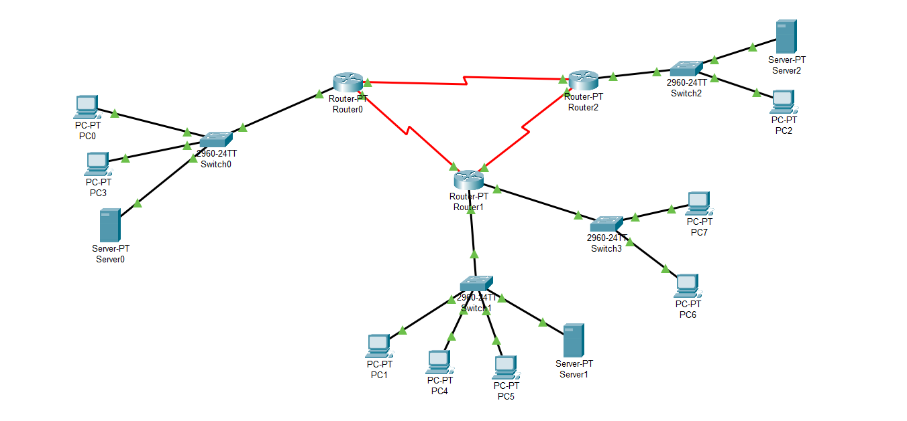
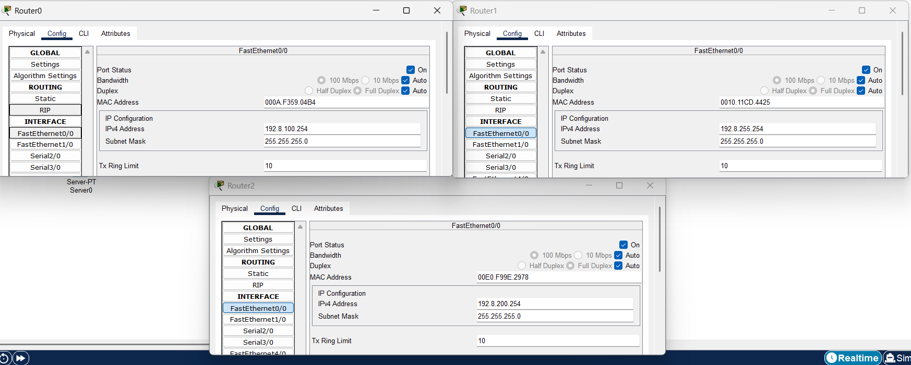
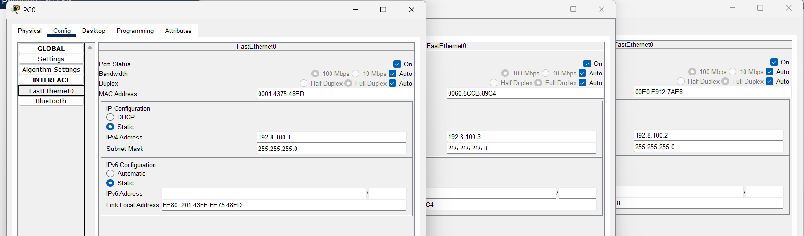
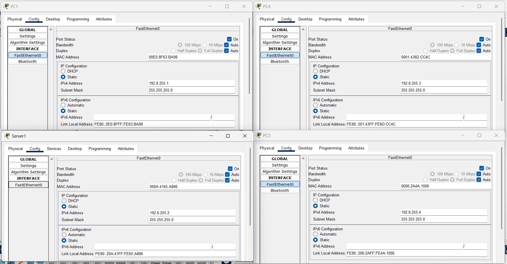
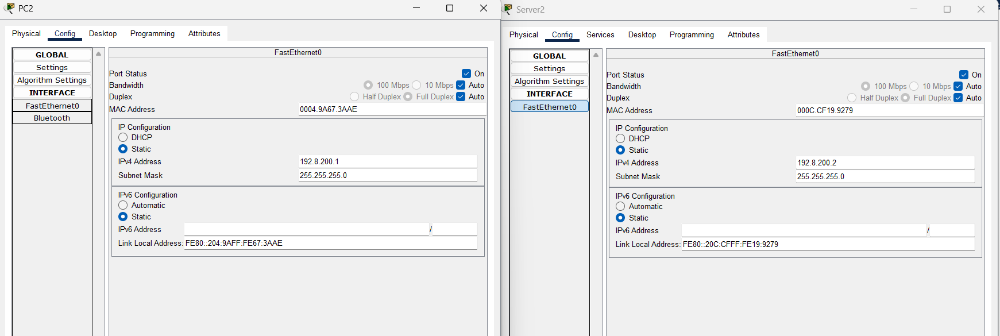
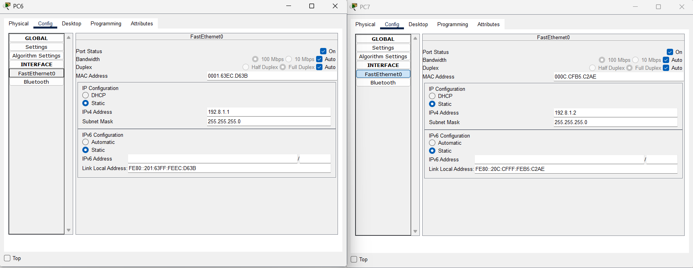
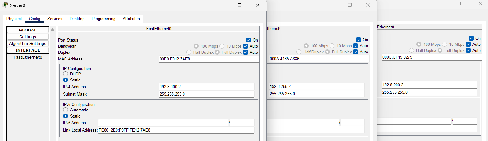
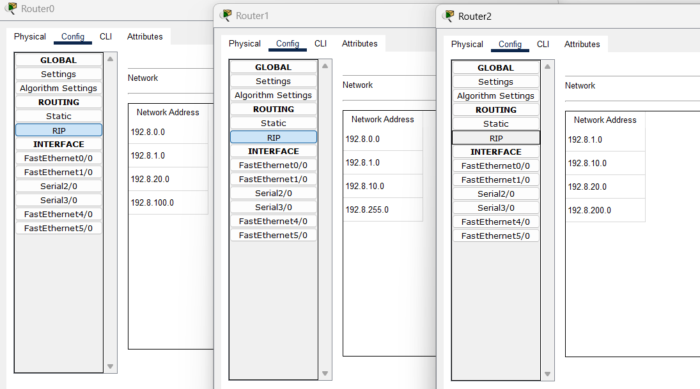
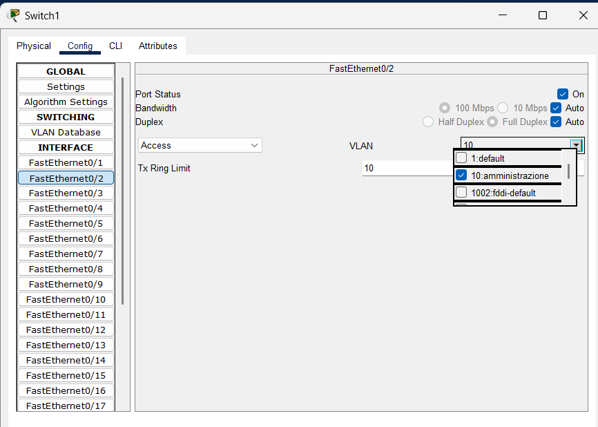

Curriculum
La rete raffigurata nello schema è una rete simulata che rappresenta un'infrastruttura composta da router, switch, computer e server.
Composizione della rete
Router
- Ci sono tre router principali nella rete:
- Router0, Router1 e Router2.
- Questi router sono interconnessi per garantire la comunicazione tra le diverse sottoreti. 
Switch
- Switch0 è collegato a:
- Due PC (PC0, PC3).
- Un server (Server0).
- Il router Router0. 
- Switch1 è collegato a:
- Tre PC (PC1, PC4, PC5).
- Un server (Server1).
- Il router Router1. 
- Switch2 è collegato a:
- Un PC (PC2).
- Un server (Server2).
- Il router Router2. 
- Switch3 è collegato a:
- Due PC (PC6, PC7).
- Il router Router1. 
PC
- Ci sono 8 PC distribuiti in diverse sottoreti:
- PC0 e PC3 sono nella sottorete collegata a Switch0.
- PC1, PC4 e PC5 sono nella sottorete collegata a Switch1.
- PC2 è nella sottorete collegata a Switch2.
- PC6 e PC7 sono nella sottorete collegata a Switch3.
Server
- Ci sono tre server:
- Server0 è collegato a Switch0.
- Server1 è collegato a Switch1.
- Server2 è collegato a Switch2. 
Architettura della rete
- La rete è progettata con una topologia gerarchica che collega router, switch, PC e server.
- I collegamenti tra i router formano una configurazione triangolare per ridurre il rischio di un singolo punto di errore.
- Ogni switch gestisce una sottorete con dispositivi specifici, come PC e server.
- I server sono distribuiti in diverse sottoreti.
Configurazioni
- Routing: I router utilizzano protocolli di routing dinamico RIP per garantire la comunicazione tra le diverse sottoreti. 
- VLAN:
- Le VLAN (Virtual Local Area Network) sono configurate per segmentare la rete in gruppi logici.
- Ogni VLAN è associata a un determinato gruppo di dispositivi per migliorare la sicurezza e l'efficienza della rete.
- Gli switch supportano VLAN per separare il traffico tra i diversi dipartimenti o sezioni della rete. 